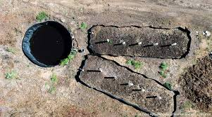

Humus
Es un abono orgánico que mejora la estructura del suelo y promueve el crecimiento de las plantas. Disponible en bolsas de 5, 10 y 20 kg.

Lixiviado
Fertilizante orgánico líquido obtenido del lombricompostaje. Mejora la fertilidad y estructura del suelo. Presentación: frasco de 1L.
Lombriz Californiana
Lombriz roja que mejora la fertilidad del suelo. Disponible en frascos de 1kg a granel.